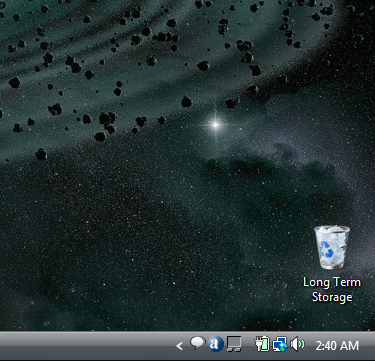

Comic JK 37
When I Feel Like It
⇤
<
?
>
⇥

⇤
<
?
>
⇥
Forum
.
RSS
.
Digg
.
Facebook
.
Reddit
.
Twitter
.
Stumbleupon
Nice wallpaper HOORJ Your mother throws dorky college boys in her trash for long term storage. hey, thats my laptop screen. |I too am fully charged. > GET BEHIND ME, DOKTOR! NOOOOOOOOOOOOOOOOOOOOOOOOOOOOOOOOOOOOOOOOOOOOOOOOOOOOOOOOOOOOOOOOOOOOOOOOOOOOOOOOOOOOOOOOOOOOOOO) VISTA! (kooshboomwtfwhyM I WRITING THIO[b'vdwjx ;l Booobs sahib CNN DJ track silk ask Lvov Saab DJ cc BBC edu talk cash HDTV shack USB ugh FCC KGB sty ugh shag Looks like caulks. People, what's a buttplug? lol. Is that even a real word? Also. lolz. > Fail good sir. fail. wtf is this? randm wiki? sick... > AVAST! Especially with Win7, this is even more true. I don't even know why I set a background anymore I only ever see it for 5 seconds on start up. >who uses windows? lolz-TAF >>all serious gamers we maybe a rare bread but wine just doesn't get the performance of a clean optimized windows install People who play Mass Effect use Windows. Because it doesn't run on Ubuntu. Even with Wine. --AR Penis penis penis